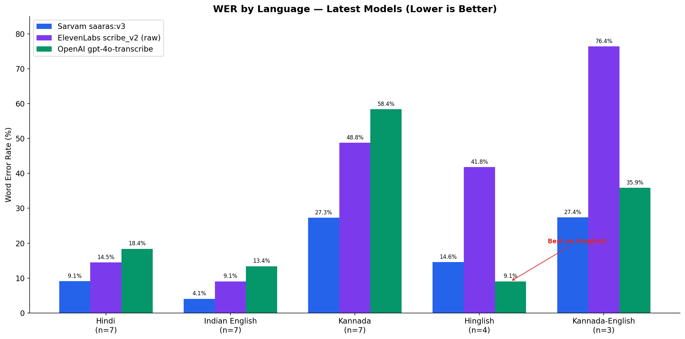
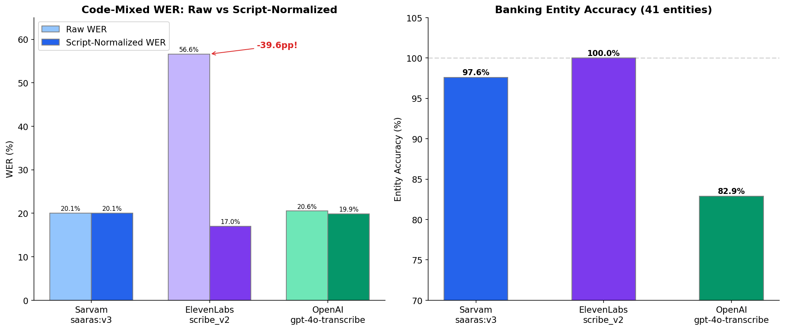
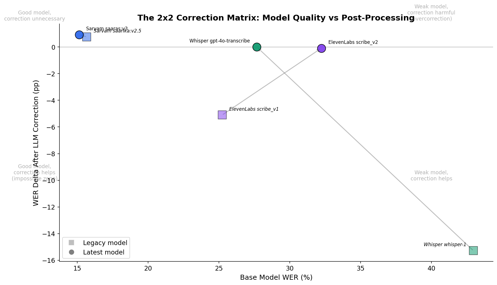

Finding 01
Per-language accuracy tells a nuanced story

| Language | n | Sarvam (saaras:v3) | ElevenLabs (scribe_v2) | OpenAI (gpt-4o-transcribe) |
|---|---|---|---|---|
| Hindi | 7 | 9.10% | 14.47% | 18.39% |
| Indian English | 7 | 4.07% | 9.06% | 13.39% |
| Kannada | 7 | 27.31% | 48.78% | 58.37% |
| Hinglish (code-mixed) | 4 | 14.58% | 41.78% | 9.05% |
| Kannada-English | 3 | 27.38% | 76.39% | 35.87% |
1. Sarvam dominates monolingual Indian languages. Unsurprising but Sarvam was the best on Hindi, English, Kannada, and Kannada-English. The Kannada gap is worth noting: Sarvam at 27% WER vs gpt-4o-transcribe at 58%.
2. gpt-4o-transcribe's Hinglish result was genuinely surprising. 9.05% WER on code-mixed Hindi-English, surpassing even Sarvam (14.58%).
3. ElevenLabs' code-mixed numbers look terrible. But the raw WER is misleading. This leads to the most important methodological discovery in the project.
Finding 02
Evaluation methodology matters as much as model quality
ElevenLabs' scribe_v2 outputs English loanwords in Latin script ("credit card") while the ground truth I was running evaluation against uses native script ("क्रेडिट कार्ड"). Standard WER computation treats these as completely different words, inflating ElevenLabs' code-mixed WER by 30-50 percentage points depending on the language.
I also identified that relying only on WER and CER for the banking use case would not be a true test. Banking domain entity accuracy is also an important metric to measure.
For a true comparison, I decided to perform script normalization, add entity accuracy comparisons & run the evaluation again for code-mixed scenarios (Hinglish & Kannada-English) specifically.

Hinglish (n=4)
| Provider | Raw WER | Script-Normalized WER |
|---|---|---|
| OpenAI (gpt-4o-transcribe) | 9.05% | 7.92% |
| ElevenLabs (scribe_v2) | 41.78% | 11.17% |
| Sarvam (saaras:v3) | 14.58% | 14.58% |
On Hinglish, OpenAI's gpt-4o-transcribe continued to reign supreme post script normalization.
Kannada-English (n=3)
| Provider | Raw WER | Script-Normalized WER |
|---|---|---|
| ElevenLabs (scribe_v2) | 76.39% | 24.79% |
| Sarvam (saaras:v3) | 27.38% | 27.38% |
| OpenAI (gpt-4o-transcribe) | 35.87% | 35.87% |
On Kannada-English, ElevenLabs became competitive with Sarvam (24.79% vs 27.38%) whereas it started from a much worse baseline.
The cleaner signal: Entity accuracy
Across all 7 code-mixed recordings (41 banking entities: amounts, card types, transaction terms, city names):
| Provider | Entity Accuracy |
|---|---|
| ElevenLabs (scribe_v2) | 41/41 (100%) |
| Sarvam (saaras:v3) | 40/41 (97.6%) |
| OpenAI (gpt-4o-transcribe) | 34/41 (82.9%) |
Entity accuracy does not depend on script format and it directly measures what banking deployments care about: did the model get "Rs 18,500" and "credit card" right?
A 40pp WER difference between providers can disappear with proper normalization. How you measure matters as much as what you measure. For banking, entity accuracy is the metric that actually maps to business outcomes.
Finding 03
When the numbers are bad, what can you actually do?
I started this evaluation using older model versions (saarika:v2.5, scribe_v1, whisper-1). The initial results on code-mixed content were rough. As a PM, the follow up question was immediate: "when transcription quality is poor, what levers do I have for improvement?"
ASR models are black boxes. Audio goes in, text comes out. No "system prompt" to iterate on. Brainstorming with Claude Code revealed that a post-ASR correction pipeline that leverages an LLM with a banking domain prompt is my best bet.
It worked. OpenAI's older model dropped 15pp in WER. ElevenLabs improved by 5pp.
Then I discovered all three providers had already shipped newer models. I ran the same evaluation and the same correction pipeline on the latest versions.

The correction pipeline was now redundant. The model upgrades had already achieved what the entire correction pipeline was doing, at zero cost.
Sarvam was barely correctable in either generation (+0.9%). Its remaining errors were too subtle for an LLM to improve without overcorrecting.
Correction pipelines have a shelf life measured in model generations. Invest in base model quality whenever feasible. Post-processing pipelines are typically short term band-aids.
PM View
If I were PM at Sarvam: three priorities
Explore/ship per-word confidence scores
Not for accuracy. Sarvam's Indian language accuracy is already strong enough that correction pipelines add no value. The real value hypothesis is enterprise observability: banks need to know which transcriptions to flag for human review. No provider offers well-calibrated confidence for Indian languages today. This is a gap worth owning.
Investigate & close the Kannada gap
Current WER is 27%, which is 3x worse than Hindi at 9%. The CER-to-WER ratio (13% CER vs 27% WER) suggests the model is close on phonetics but struggles with word boundaries. That seems to be a tractable problem.
Language-routed correction using Sarvam's own LLMs
Apply lightweight correction on code-mixed content (where English banking terms provide strong signal) but pass through pure Indic output unchanged. Sarvam's open-source 30B/105B models could power this at zero marginal LLM cost. Competitive differentiator.